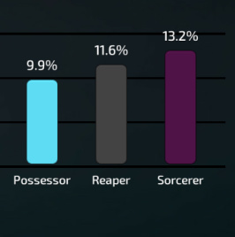

Assuming that all the basics you need for a scenario like this. If the alchemist says “I will flip a coin, if its heads I kill the king, if its tails I will kill the unseen.”
What do you do as unseen?

Assuming that all the basics you need for a scenario like this. If the alchemist says “I will flip a coin, if its heads I kill the king, if its tails I will kill the unseen.”
What do you do as unseen?
I do nothing.
I feel like I didn’t quite illustrate the point I was making with my scenario so I’ll try again.
Your primary objective as unseen/cult is to defeat the Blue Dragon. With this in mind, you should always aim for king BECAUSE there is a slight chance that the alchemist will not heal the king and win with you. Under the conditions specified, I would whole heartedly consider killing the alchemist here to be a throw.
All night action scenarios:
You go for the king, the Alchemist heals the king around 80% of the time, and “forgets” the rest of the time. Unseen wins 20% of the time.
You go for the alchemist, 1 unseen vs 1 BD king, BD king ups you 100% of the time, unseen wins 0% of the time.
Conclusion: The Alchemist is a wildcard, and as such there is generally little reason for either side to kill an alchemist. As such, Alchemists may be coerced under the threat of death, but more often than not the best way to get an alchemist to side with you is to be nice to them.
Well, wasn’t King poisoned 
Assume he isn’t poisoned for the sake of the scenario, but the alchemist stated “I’m going to heal the king tonight”
Then attack King, as any other action means you always lose
I’m pretty much in complete agreement here - failure to play to your win condition is throwing. Neutral or not, it should be discouraged. Bannable? In this case, probably not. But certainly never embraced.
But in what way is an alch not trying to win
If they pass up an opportunity to end the game to instead put themselves at massive risk of being killed.
You wouldn’t argue that a NK that doesn’t try to kill people and just lets itself be found and killed is not throwing - Alchemist really isn’t too far removed from that, even if it (usually) has less of an impact on the overall game.
Bad strat is never throwing though - It’s just being really stupid.
This. If you look at the stats in Discord #news or Reddit, you can also see this:

So IF you get an Alchemist, IF they’re winning, IF the NK is still alive at the end of the game (9~13% chance for this, alone), and IF both alchemist AND NK are alive at the end, and IF they decide to side with the opposite, I’d say grant them that opportunity – it’s rare and they deserve to choose.
That said, This scenario, itself, is very obscure. By looking at the statistical probability of this even happening, most people in this thread will likely only see this once every few hundred games.
This also encourages players to be nice to neutrals, as I’m sure no Alch would want to side with people that are flaming you and threatening to report you if you don’t side with them.
Then to make things more, imagine we have thousands of reports per week with only a limited amount of resources to clear them all. Would you rather see resources go to the “gray area alchemist” maybe get a warning? Or see super racist/targeted toxicity get removed from the game? This is another reason for what we do.
A further reason is that we already place limitations/rules on how you play. This is a sandbox strategy game – the more we restrict, the “slipperier” this slope goes. We’ve spent the past 2 years (release + throughout beta + alpha) to find that line between restrictions and freedom. There’s a line and this is a thread (no pun intended  ) where that line is visible.
) where that line is visible.
Heads up, insulting a dev never helps any situation O_o there’s always a reason for our choices, even if it’s not initially seen -__-" our entire game has been molded by the community, so most of what we do reflects the community’s majority, generally by the Pareto Principle (80% community, 20% dev). By insulting the devs, there’s a great chance you’re insulting a great number of players, too.
But most of all, it sorta hurts our feelings  it’s very possible to be constructive without being condescending.
it’s very possible to be constructive without being condescending.
So I feel like, as usual, I need to butt myself into every single controversial topic ever.
Alchemists cannot gamethrow.
The important thing people forget about Alchemist is that Alchemists are supposed to betray you, and they’re supposed to make dirty deals behind the Blue Dragon’s back. To say that Alchemist must always act to their absolute gain is utterly ridiculous, and in my opinion it is a perfectly valid strategy to, if you are about to die as Alchemist, fuck up as much as possible instead of taking a slim chance of survival:
Icibalus’s Principle of the Dying Alchemist - A dying alchemist (for whatever reason) has the ability to use, for example, their Emerald Potions, to screw up the BD as much as humanly possible, instead of performing an action that may lead to their survival.
Alchemist is neutral, and in order to win they have to side with someone. I think to say that Alchemist must always be trying solely to SURVIVE shuts off the possiblity of a lot of plays like this, and invalidates the very POINT of the class.
An Alchemist should be allowed to sacrifice their win in order to take revenge on someone who slighted them earlier in the game. It’s not optimal and it’s not the correct play, sure, but to say that it should be discouraged is denying a whole ton of potential Alchemist strategies later on.
Also, what xblade said is true as well.
The first quote is an attempt to inject humor into the post, makes people less inclined to look for a tl;dr. Besides, there’s nothing wrong with doobie or hippies!
The second is a genuine view I hold. If anything, it’s criticism. Maybe you are aware and simply haven’t expressed anything publicly about it, but that’s how it comes across to me.
That said, I apologise if anything said came across as insulting. My post is fueled by a desire to improve the game, not to insult any of the staff.
This is but one scenario. You can add extra BD/Evils into the mix and still have this kind of thing occurring, games can get stalled by up to 5 days when this happens. Sometimes the stalling doesn’t even result in the NK winning, it just prolongs the game and forces Unseen/Cult to remove the Alchemist from play so they can continue, so the point you raise about the winrate for NKs being low doesn’t necessarily knock my point down. That said, you have the analytics so I can’t really challenge you on that regard.
One other point I’d like to make regarding the Alch winrate: I think it would be significantly higher if Alchs weren’t deliberately sacrificing their own win condition to make their mark on a game.
I think putting attention into what causes frustration for players will reduce toxicity overall. I might be being generous here, but most of the time it’s a negative ingame experience that causes people to lash out, rather than of their own volition. This isn’t a justification behind lashing out, but an observation of what happens.
I speak only for myself in this post. I don’t know for sure if others find games being needlessly stalled frustrating or irritating, but then I ask myself why there’s such a massive chasm between the ‘Neuts in’ and ‘Neuts out’ camps. Alchemists have the worst reputation of any class, bar none, and I think this kind of behaviour is one of the reasons it’s prevalent.
In my view, being nice to Alchs so they side with you should be reflective of an Alchs early game actions (BD is nice to an Alch early on, so they heal poison/bleed/etc). Instead we have games where because someone said Neuts Out D1 or something, an Alch finds it appropriate at the latest stage of the game to throw their own life away and stall the game several extra days in an attempt to deny one person the win.
We’re in absolute agreement here, which is why I don’t want the practice I describe to be outright banned. I’ve been here since Beta and have seen the evolution of the rules and mechanics take place. It’s something I will always respect the devs/mods for doing, having excessive amounts of rules discourages experimentation and the use of unorthodox strategies (something I very much like). There is, however, a difference between an unorthodox strategy and sacrificing your own win condition in an attempt to crown a victor of your choosing.
Even if it’s just a tip in the Alchemists description, or a loading screen tip: “Alchemists win as soon as the game ends, and should therefore seek to end the game as soon as possible.” - Just something that sways people away from this kind of behavior would be a godsend.
I imagine you can only feel this way entering this thread if you haven’t read it.
It’s literally the second line into the thread.
Yes, being too tied to a win condition can shut down a lot of plays. I don’t think scenarios like the one in my OP constitutes a “play”.
I’ve gone against what my win condition asks me to do in attempt to achieve it in the long term before.
Say it’s mid-late game and the evil faction is looking to remove the Neutral Killer from play. I’ve had games where Cult have bussed the NK with a bogus lead, and it becomes increasingly obvious that they are the NK. I unironically force pardoned this as Good King, as the evil faction would simply cruise into vote majority the following day. Technically, I went against my win condition by saving the life of someone who seeks to do me harm, but did it for the benefit of BD long term, not only can the NK kill Cult, they are more inclined to vote with Blue Dragon for a while to thin the Cult numbers. Naturally, I was executed that day, several Blue Dragon players were genuinely convinced I was an Evil King (and later throwing when I was revealed to be Good King). I would never seek to have these kinds of plays be punished irrespective of whether they turn out to be successful.
The play I’ve described above is not in line with this, however. There’s a difference between putting a win condition at risk, and outright refusing to have that win condition take place. Discouraging that kind of behavior doesn’t shut down plays like the one above.
I am not going to address all of this, but stalling the game out can be done by a multitude of classes.
Imagine this scenario: 1 Prince, 1 assassin without poison, 1 random BD except noble. (A similar thing can occur with a Butler/HH’ing drunk for instance)
Prince can jail assassin up to 3 times without executing and refuse to vote him up the next day.
Stall trolling or whatever you would name it is not an alchemist only problem in this manner. The motivation behind it (wanting to have a certain person win, or just plain old “for the lulz” should not be really relevant in my opinion.
Hello! I’m here to provide my opinions. I read the OP but have skipped the comments so I can give pure feedback.
The first point on this whole post is: What is gamethrowing?. The answer is this: Gamethrowing is intentionally going against your win condition.
Neutrals are the hardest for this whole discussion so I will try and do a short part on each Neuts.
Alchemist: Can side with anyone. Doesn’t need anyone alive to win with. Only objective is survival. If Alchemist is in a final 4 like you explained without a stoneskin, it’s pretty iffy. They need to survive, so deciding to give Possessor a free win is essentially suicide. However, it could just be a misplay. However if they had a stoneskin, it would be completely fair game.
Fool: Needs to be executed during the day. Claiming Fool isn’t throwing as if evils are close to a majority, then they will vote you up. All evils benefit from Fool being executed so it is beneficial. Only think for fool is to not trollbox anything that breaks the rules of racism/explicit material. Other than that, anything goes
Scorned: Needs at least 1 out of 2 targets executed at day. Can do almost anything to do that. Typically try avoiding outing too early as scum in the end will likely help give you the win. Only push them when you’re sure you can get away with it or you will be screwed over.
Merc: Must help BD survive. Intentionally voting final members / allowing them to be converted is gamethrowing. Intentions not possible to tell.
Sellsword: Needs BD to lose. Intentionally keeping them alive is throwing if scum cannot deal with them. (Intentions = Hard)
Inquisitor: Unless he becomes neutral King (I’ve done this), he needs to kill the Sorc for his wincon. So intentionally keeping them alive would be throwing. But it’s incredibly hard to tell their intentions
Sorc: Needs BD to lose. Intentionally siding BD is throwing or asking Inquis to kill you. But again it’s hard to tell intentions. They don’t necessarily need to help the scum faction as they can win solo
Reaper: Kill everyone but Neuts who can with with you. Intentionally outing and refusing to reap could be throwing.
Possessor: Same if original king and/Or Prince is alive.
Neutrals are a lot more difficult to accuse of throwing but under some very niche circumstances I think it should be considered throwing.
The main problem with this is that we need to be careful how restrictive we are with rules on throwing as we want people to have fun but also not just to mess around and screw themselves and/or their faction over
And he’d be right to unless he doesn’t exe the third night. It stems the flow of deaths and reduces pressure for the Blue Dragon. Time is a resource that benefits the BD.
I’m honestly not sure how I went from reading Xblade’s post and thinking “yeah this all makes perfect sense” to reading yours and hating every word lol
Lets say the random BD class is a psychic that links the Prince at night then. Your example also used people knowing who everyone is, so I assumed mine could too, but now there is no excuse for the Prince not to execute the Assassin.